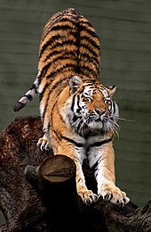

The Bengal tiger's coat is yellow to light orange, with stripes ranging from dark brown to black; the belly and the interior parts of the limbs are white, and the tail is orange with black rings. The white tiger is a recessive mutant, which is reported in the wild from time to time in Assam, Bengal, Bihar, and especially in the former State of Rewa. However, it is not an occurrence of albinism. In fact, there is only one fully authenticated case of a true albino tiger, and none of black tigers, with the possible exception of one dead specimen examined in Chittagong in 1846.[19]
Males and females have an average total length of 270 to 310 cm (110 to 120 in) and 240 to 265 cm (94 to 104 in) respectively, including a tail of 85 to 110 cm (33 to 43 in) long.[2][20] They typically range 90 to 110 cm (35 to 43 in) in height at the shoulders.[20] The standard weight of males ranges from 175 to 260 kg (386 to 573 lb), while that of the females ranges from 100 to 160 kg (220 to 350 lb).[2][20] The smallest recorded weights for Bengal tigers are from the Bangladesh Sundarbans, where adult females are 75 to 80 kg (165 to 176 lb).[21]
The tiger has exceptionally stout teeth. Its canines are 7.5 to 10 cm (3.0 to 3.9 in) long and thus the longest among all cats.[22] The greatest length of its skull is 332 to 376 mm (13.1 to 14.8 in).[15] |
 |